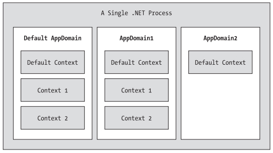

Chapter 13 - Processes, AppDomains, Contexts and CLR Hosts
Content
In this chapter, you’ll drill deeper into the details of how an assembly is hosted by the CLR and come to understand the relationship between processes, application domains, and object contexts.
Introduction to Win32 Processes
The concept of a "process" has existed within Windows-based operating systems well before the release of the .NET platform.
Simply put, process is the term used to describe the set of resources (such as external code libraries and the primary thread) and the necessary memory allocations used by a running application.
For each *.exe loaded into memory, the OS creates a separate and isolated process for use during its lifetime.
Using this approach to application isolation, the result is a much more robust and stable runtime environment, given that the failure of one process does not affect the functioning of another.
Now, every Win32 process is assigned a unique process identifier (PID) and may be independently loaded and unloaded by the OS as necessary.
As you may be aware, the Processes tab of the Windows Task Manager utility allows you to view various statistics regarding the processes running on a given machine, including its PID and image name.
Every Win32 process has exactly one main "thread" that functions as the entry point for the application.
First of all, a thread is a path of execution within a process. Formally speaking, the first thread created by a process's entry point is termed the primary thread.
Processes that contain a single primary thread of execution are intrinsically thread-safe, given the fact that there is only one thread that can access the data in the application at a given time.
However, a single-threaded process (especially one that is GUI-based) will often appear a bit unresponsive to the user if this single thread is performing a complex operation (such as printing out a lengthy text file,
performing an exotic calculation, or attempting to connect to a remote server located thousands of miles away).
Given this potential drawback of single-threaded applications, the Win32 API makes it is possible for the primary thread to spawn additional secondary threads
(also termed worker threads) using a handful of Win32 API functions such as CreateThread(). Each thread (primary or secondary) becomes a unique path of execution in the process and has concurrent access to all shared points of data.
Introduction to System.Diagnostics namespace
The System.Diagnostics namespace defines a number of types that allow you to programmatically interact with processes and various diagnostic-related types such as the system event log and performance counters.
In this chapter, we are only concerned with the process-centric types defined in the below table.
| Process |
The Process class provides access to local and remote processes and also allows you to programmatically start and stop processes. |
| ProcessModule |
This type represents a module (*.dll or *.exe) that is loaded into a particular process.
Understand that the ProcessModule type can represent any module COM-based, .NET-based, or traditional C-based binaries.
|
| ProcessModuleCollection |
Provides a strongly typed collection of ProcessModule objects. |
| ProcessStartInfo |
Specifies a set of values used when starting a process via the Process.Start()method. |
| ProcessThread |
Represents a thread within a given process. Be aware that ProcessThread is a type used to diagnose a process's thread set
and is not used to spawn new threads of execution within a process |
| ProcessThreadCollection |
Provides a strongly typed collection of ProcessThread objects. |
Understanding .NET Application Domains
Under the .NET platform, assemblies are not hosted directly within a process (as is the case in traditional Win32 applications). Rather,
a .NET executable is hosted by a logical partition within a process termed an application domain (aka AppDomain). As you will see, a single process may contain multiple application domains,
each of which is hosting a .NET executable. This additional subdivision of a traditional Win32 process offers several benefits, some of which are as follows:
- AppDomains are a key aspect of the OS-neutral nature of the .NET platform, given that this logical division abstracts away the differences in how an underlying OS represents a loaded executable.
- AppDomains are far less expensive in terms of processing power and memory than a fullblown process. Thus, the CLR is able to load and unload application domains much quicker than a formal process
- AppDomains provide a deeper level of isolation for hosting a loaded application. If one AppDomain within a process fails, the remaining AppDomains remain functional
While a single process may host multiple AppDomains, this is not always the case. At the very least, an OS process will host what is termed the default application domain.
This specific application domain is automatically created by the CLR at the time the process launches.
After this point, the CLR creates additional application domains on an as-needed basis. If the need should arise (which it most likely will not for the majority of your .NET endeavors),
you are also able to programmatically create application domains at runtime within a given process using static methods of the System.AppDomain class.
Understanding Object Context Boundaries
AppDomains are logical partitions within a process used to host .NET assemblies. On a related note, a given application domain may be further subdivided into numerous context boundaries.
In a nutshell, a .NET context provides a way for a single AppDomain to establish a "specific home" for a given object.
Using context, the CLR is able to ensure that objects that have special runtime requirements are handled in an appropriate and consistent manner by intercepting method invocations into and out of a given context.
This layer of interception allows the CLR to adjust the current method invocation to conformto the contextual settings of a given object. For example, if you define a C# class type that requires automatic thread safety
(using the [Synchronization] attribute), the CLR will create a "synchronized context" during allocation.
Just as a process defines a default AppDomain, every application domain has a default context. This default context (sometimes referred to as context 0, given that it is always the first context created within an application domain)
is used to group together .NET objects that have no specific or unique contextual needs. As you may expect, a vast majority of .NET objects are loaded into context 0. If the CLR determines a newly created object has special needs,
a new context boundary is created within the hosting application domain. The below figure illustrates the process/AppDomain/context relationship.

Context-Agile and Context-Bound types
.NET types that do not demand any special contextual treatment are termed context-agile objects. These objects can be accessed from anywhere within the hosting AppDomain without interfering with the object's runtime requirements.
Building context-agile objects is a no-brainer, given that you simply do nothing (specifically, you do not adorn the type with any contextual attributes and do not derive from the System.ContextBoundObject base class):
public class SportsCar {}
On the other hand, objects that do demand contextual allocation are termed context-bound objects, and they must derive from the System.ContextBoundObject base class.
This base class solidifies the fact that the object in question can function appropriately only within the context in which it was created. Given the role of .NET context,
it should stand to reason that if a context-bound object were to somehow end up in an incompatible context, bad things would be guaranteed to occur at the most inopportune times.
Hosting the Common Language Runtime
Given that the Windows OS does not natively understand the format of a .NET assembly, it should be clear that various steps occur in the background when an executable assembly is activated.
Under the Windows XP OS, the basic steps are as follows:
- The Windows OS loads the executable binary file into memory.
- The Windows OS reads the embedded WinNT header to determine if the binary file is a .NET assembly (via the IMAGE_DIRECTORY_ENTRY_COM_DESCRIPTOR flag).
- If the image is a .NET assembly, mscoree.dll is loaded.
- mscoree.dll then loads one of two implementations of the CLR (mscorwks.dll or mscorsvr.dll).
- At this point, the CLR takes over the show, performing all .NET-centric details (finding external assemblies, performing security checks, processing CIL code,
performing garbage collections, etc.).
Summary
The point of this chapter was to examine exactly how a .NET executable image is hosted by the .NET platform. As you have seen, the long-standing notion of aWin32 process has been altered under the hood to accommodate the needs of the CLR.
A single process (which can be programmatically manipulated via the System.Diagnostics.Process type) is now composed of multiple application domains, which represent isolated and independent boundaries within a process.
As you have seen, a single process can host multiple application domains, each of which is capable of hosting and executing any number of related assemblies.
Furthermore, a single application domain can contain any number of contextual boundaries. Using this additional level of type isolation, the CLR can ensure that special-need objects are handled correctly.
The chapter concluded by examining the details regarding how the CLR is hosted by the Win32 OS.